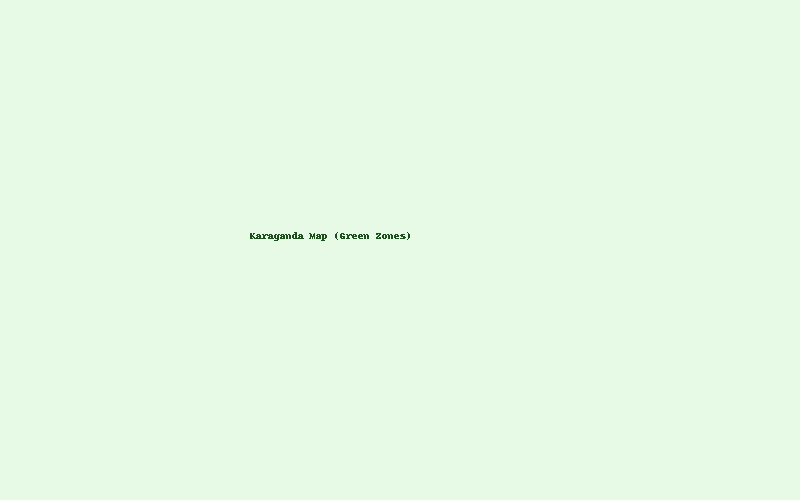

Майқұдық, Оңтүстік-Шығыс және Орталық аудандарын көгалдандыру жобасы
Қарағанды қаласында экологиялық жағдай соңғы жылдары күрделеніп барады. Әсіресе Майқұдық, Оңтүстік-Шығыс және Орталық аудандарында ауа сапасы төмендеп, жасыл аймақтардың жетіспеушілігі байқалады.
Біздің мақсат — әр ауданға "Жасыл белдеу" құрып, мектептер мен қоғамдық аймақтарда экологиялық бақтар мен шағын ормандар отырғызу.
Картада көгалдандыру жоспарланған негізгі аудандар көрсетілген.
Жоба нәтижесінде: